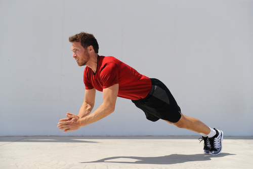

Start by standing with your feet shoulder-width apart and your hips and shoulders square to the target. Hold a med ball in both hands in front of your chest. Rotate your hips and shoulders so that your hips and shoulders are pointing at the target. As you rotate, explosively throw the ball to the target. As you throw the ball, continue to rotate your hips and shoulders so that your back is facing the target when you release the ball. Catch the ball and repeat the exercise. This exercise is great for enchancing the core as well as the shoulders and their rotational power, which are essential to batting and throwing harder.
Start in a regular push-up position with your hands shoulder-width apart and your feet together. Lower yourself down until your chest is just above the ground. Explosively push yourself back up to the starting position and clap your hands together at the top. Land softly back in the starting position and immediately begin your next rep. This exercise strengthens your upper body's power, endurance, and strength. This will translate into better stamina on the field, harder throws, and faster bat speed.
Start by standing with your feet about hip-width apart and holding a dumbbell in each hand. Place your left foot behind you and rest it on top of a bench or chair. Keeping your trunk upright, lower your body down until your right thigh is parallel to the ground. Pause for a moment and then press back up to the starting position. This exercise lets you to strengthen your leg's explosiveness and strength, allowing for quicker movement around the bases.
Start by standing with your feet about shoulder-width apart and your hands at your sides. Keeping your trunk upright, jump to the right as far as you can. Land on your right foot and immediately jump back to the left. This exercise helps your balance, lower body power, enchance your core strength and stability, and most importantly, your agility letting you move powerfully and quickly in any situation.
Start by lying on your left side with your elbow bent to 90 degrees and your hand behind your head. Keeping your elbow in place, rotate your upper arm so that your hand moves toward the floor. Slowly return to the starting position and repeat. This exercise is great for strengthing and keeping your rotator cuff healthy, the same muscle responsible for throwing harder and throwing in general.
Start by setting up a barbell in a landmine position. If you don't have a landmine, you can use a weighted plate or dumbbell instead. Hold the barbell with both hands and stand with your feet shoulder-width apart. Keeping your lower body stationary, rotate your torso to the left and then to the right. This exercise is exceptional for core strength and rotational power, allowing for increased power in throwing and batting.
Place your feet in the starting position - feet should be shoulder-width apart, with your weight on the balls of your feet. Get into a low crouch - bend your knees and hips so that you are in a low, athletic position. Explode out of the blocks - when you're ready, push off with your feet and sprint as fast as you can. Stay tall - resist the urge to lean forward as you run, and focus on keeping your body upright. Drive your arms - pump your arms back and forth to help generate speed. This exercise is great for lower body agility, speed, and power, allowing better movement on the field.